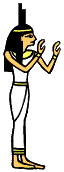

「光のご飯」
太陽に向かって、（又は心の中で太陽に向かって）
額の前で両手の親指と人差し指を使いピラミットを作り、額につけましょう。
太陽が手の平のピラミットの中に入る位置に真っ直ぐ手を伸ばします。
ピラミットから額に向けて太陽の道が出来るイメージです。
そのままリラックスして3分〜5分を過ごして手を下ろします。。
その後は腕を下ろし、軽く自然に左右に開き手のひらを太陽に向け
時間の許す範囲でのんびり過ごしましょう。
イメージの最中は額を通して入ってくる光が背骨を通って
真っ直ぐ地中深くまで流れ込んで行く所までイメージします。
（クリスタルを合わせるにはジェネレータークリスタル・クリスタル・
セレナイト・ゴールデントパーズ・ハニーカルサイト等がお薦め。）
Source:
http://homepage2.nifty.com/steragate/meiso-hikari.htm